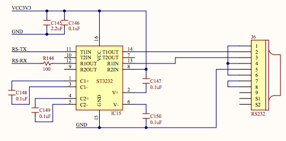
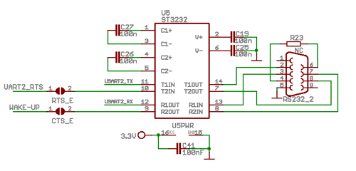
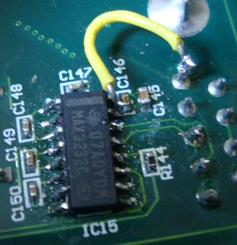

Fixing the serial port of my Nexys2
I'm writing this post because today I fixed the serial port of my Nexys2 board. This will mainly highlight how we can get trapped in some way of thinking when we're pretty sure about something and not contemplate a whole spectrum of options surrounding it. It will be somewhat shameful I guess, but let's see if you can find the solution more easily than I did!
A month ago or so I was working on learning Verilog and was writing some code. I got to a point where I wanted to test a softcore and I needed to upload code through the serial port. While getting there, I made a port of the lattice mico32 softcore to my board. Actually the hard work was already done and I only had to make some very small adaptations. I used the code from this repo:
https://github.com/optixx/lm32
The problem was that it booted, sent a prompt throught the serial port but I could not input commands. If you look at the code at firmware/boot0-serial/main.c you'll see that what it does is this:
uart_putstr("**soc-lm32/bootloader** > \r\n"); c = uart_getchar();
I'm omitting the irrelevant code. So I got the prompt but no data that I sent from the computer ever got in to the Nexys2. Since the lm32 is a quite complex softcore I thought that maybe it had some problems and ended up testing other UART cores. Actually I ended up writing my own which is at this repo (in the directory uart):
https://github.com/utzig/nexys2-verilog-samples (btw, this is not good code!)
The results were the same. It worked in the transmit direction only.
The schematics for the Nexys2 UART converter is this:
I put an oscilloscope on the RX signal and tried to find out what was happening. So here's how a RS232 UART works. The TX/RX lines are usually in high level. When you send data, the first thing it does is to send the START bit. A START bit is characterized by a transition from high to low level. The data bits go next and at last the STOP bit (or bits). What was happening here was that the RX line would go to low level and stay that way. It would never go back to high level. No data was going through. To get it back to working state I had to disconnect/reconnect.
I started suspecting my the issue was with my USB <-> RS232 adapter. I got another board (an ARM CM3 powered devboard) and wrote some code for doing serial communications. This ended up working and I got data in and out. So it was clear the problem was not with my serial adapter. Btw, here are the schematics of the board I used to do the test (Olimex STM32-P103):
The conclusion then was that the problem was either with the pin used for RX on my FPGA or with the onboard TTL <-> RS232 converter. So I ended up buying some extra converters to test it. And these things are not easy to get here in Brazil. But I found them at Multcomercial. They arrived yesterday and this morning I removed the old ST3232 and put a new MAX3232 chip. You can see the final result below:
As you can see I ended up destroying one onboard wire and had to fix with normal wire. When I turned it on, data came out and when I sent data nothing came in. Shit!!!
So, the problem must be with the FPGA pin, right? Actually no, it isn't.
Let's look harder at schematics! There are some difference between the two boards. The STM32 has the main lines (RX/TX/GND) connected in the standard way but it has also the CTS/RTS lines connected to the converter and has a resistor between DTR and DSR. The Nexys2 has the RX/TX/GND lines connected the same way but RTS is connected to CTS (no connection to the converter) and DSR/DTR/DCD are all connected together. Interesting, right?.
I got a spare serial cable, soldered the 3 pins which matter (RX/TX/GND), tried again and voilá... data out and data in.
Sometimes we get stuck with knowing for sure that we know what's happening but turns out we don't (at least it applies to me!).
Comments
Comments powered by Disqus